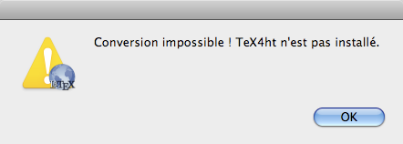
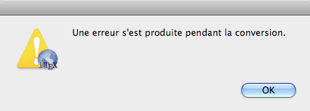

Si TeX4ht n’est pas installé SimpleTeX4ht affichera le message d’erreur :

SimpleTeX4ht n’inclut pas TeX4ht. L’installation de TeX4ht résout le problème.

Une erreur est survenue pendant la compilation. TeX4ht n'a pas réussi à convertir le fichier LaTeX.